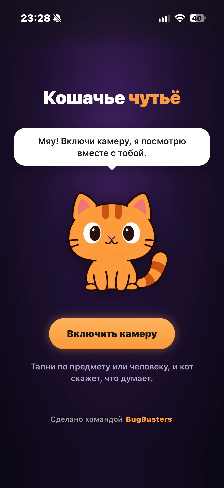
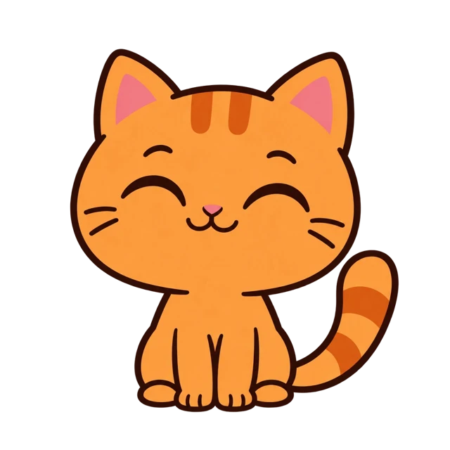
Наведи телефон на мир и посмотри на него глазами кошки. А кот напишет, что думает.
Веб-приложение для телефона. Открыл сайт, и мир на экране становится кошачьим: красный и зелёный сливаются, всё чуть мягче. Тапни по чему угодно, и рыжий кот ответит.
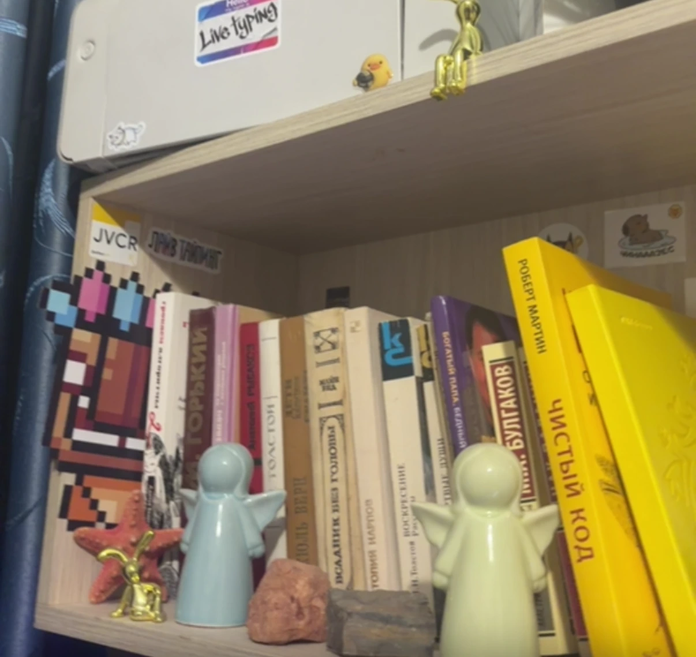
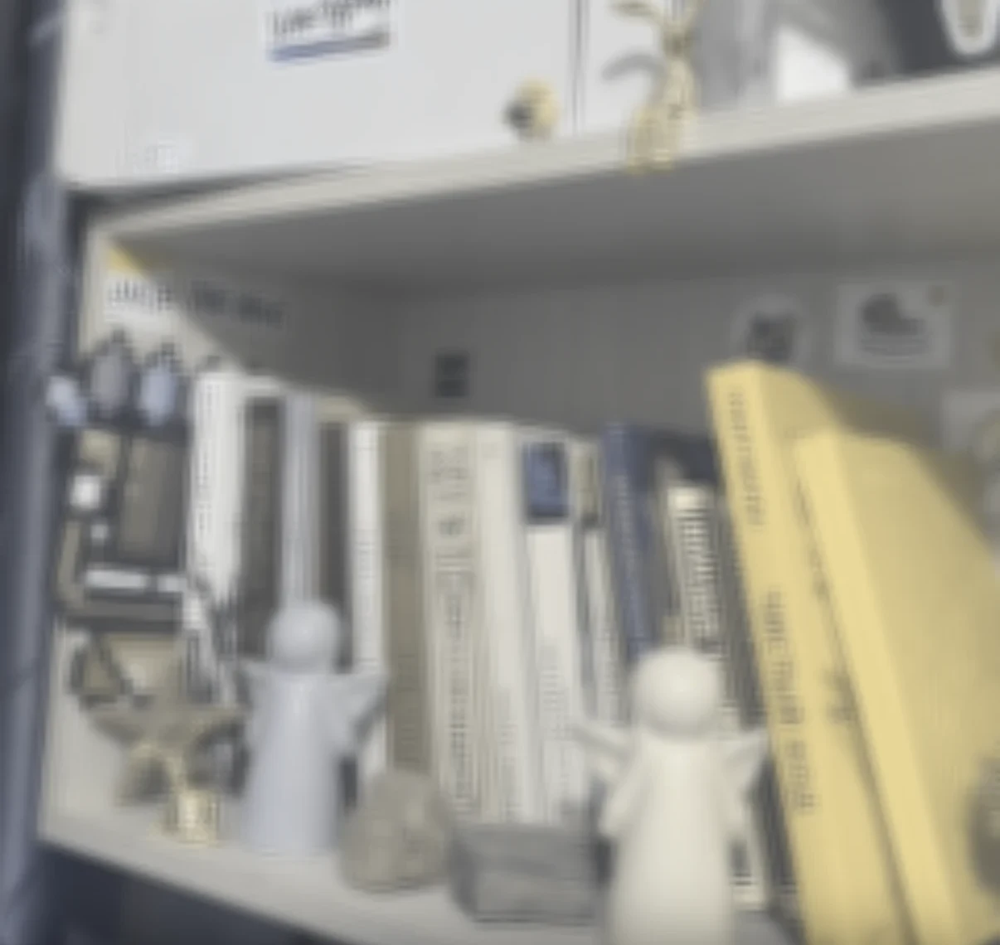
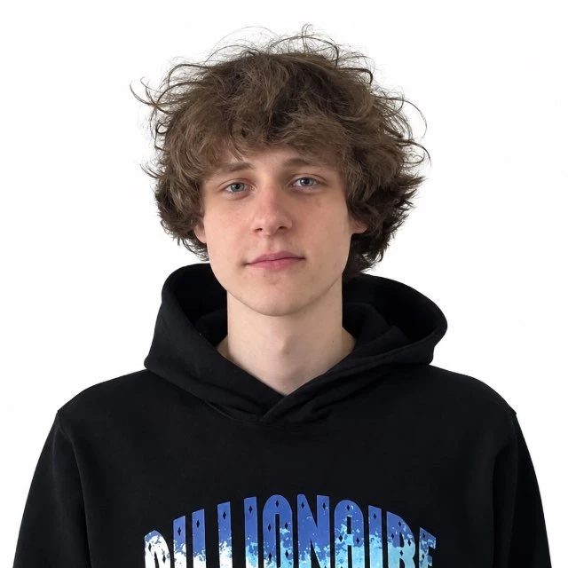
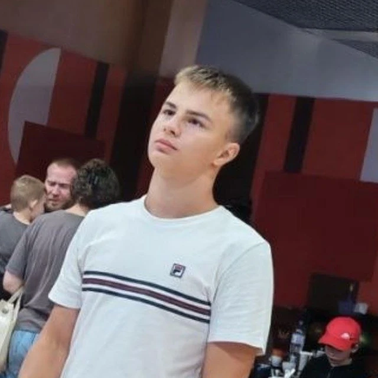
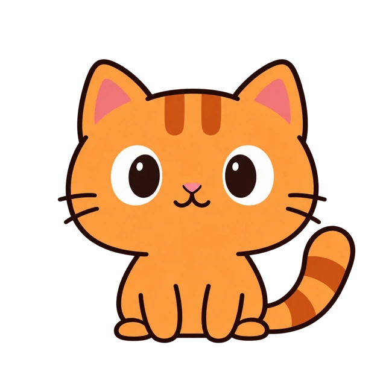
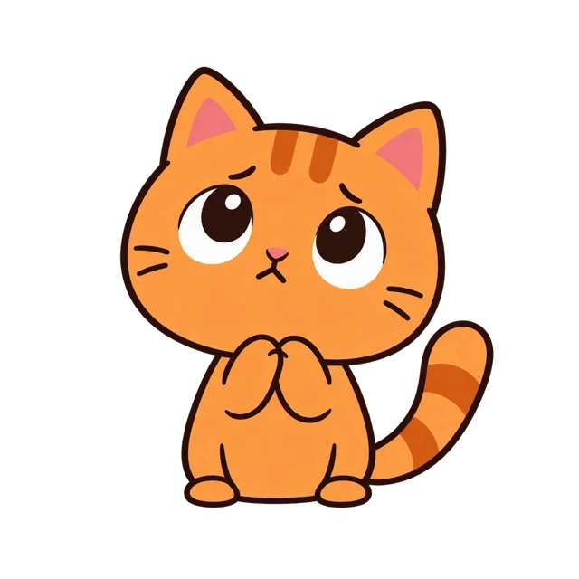
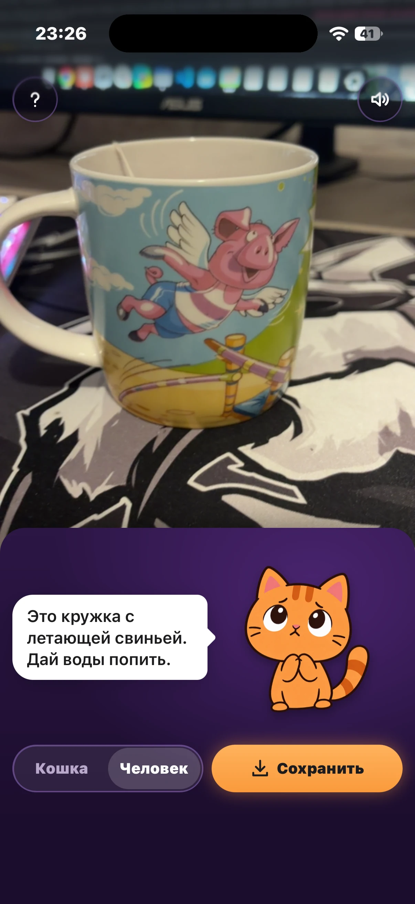
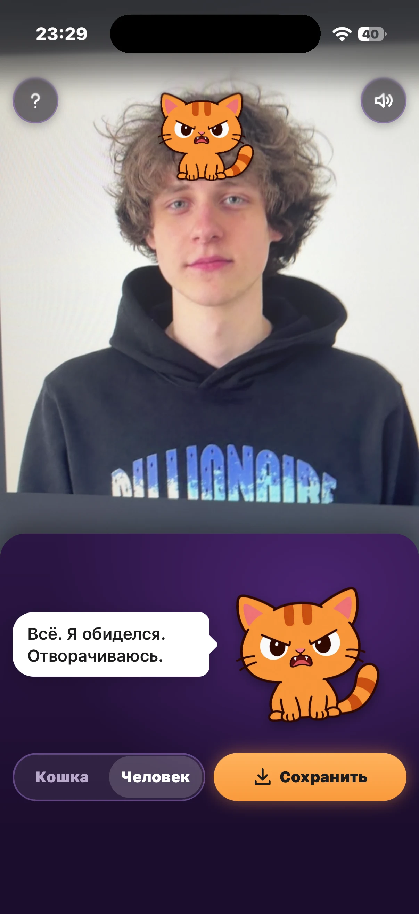
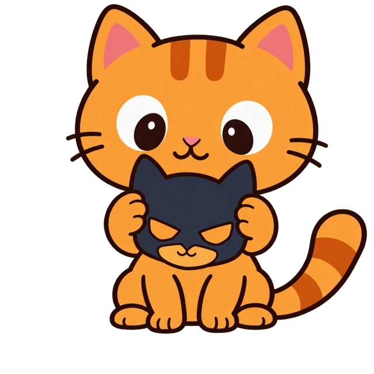
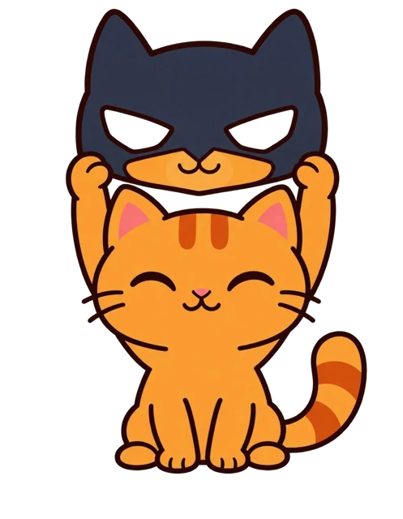
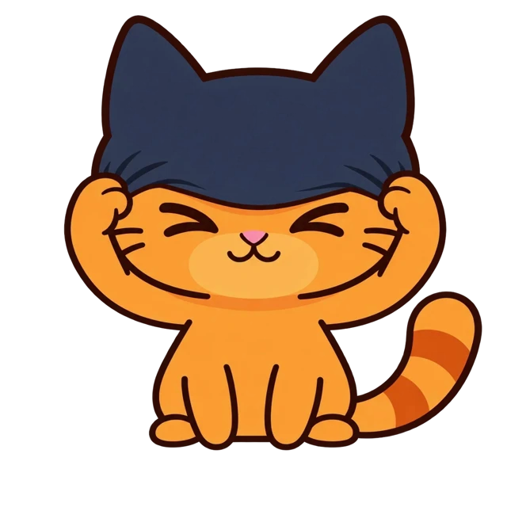
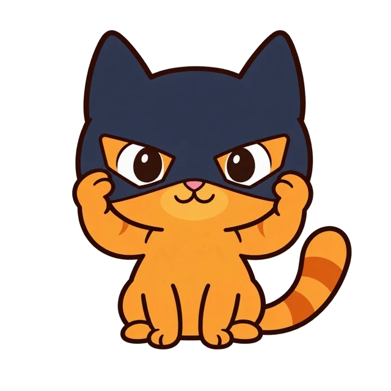
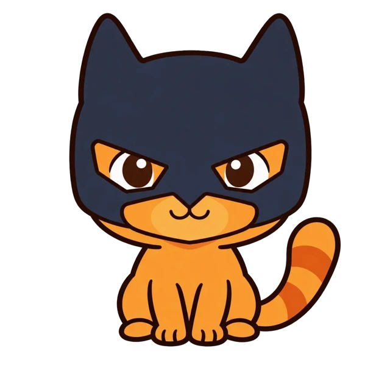
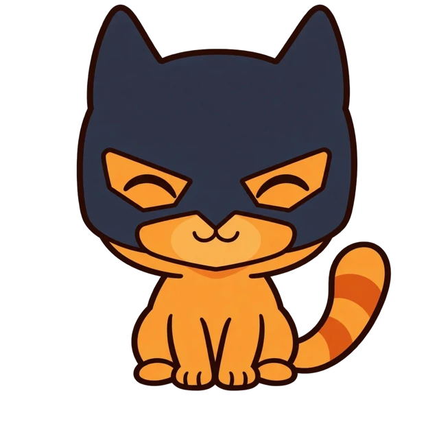
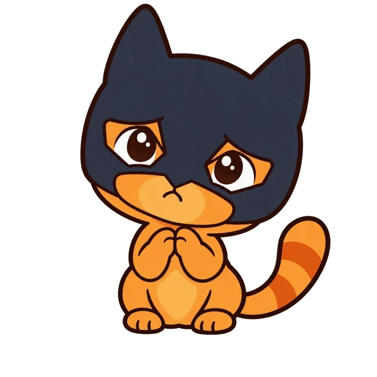
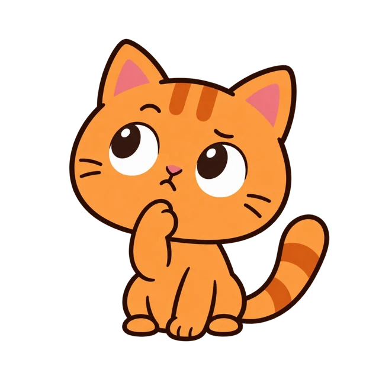
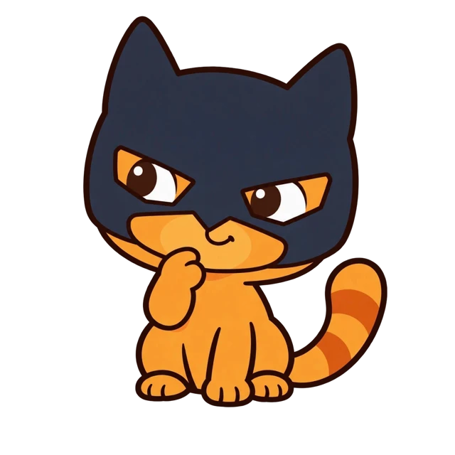
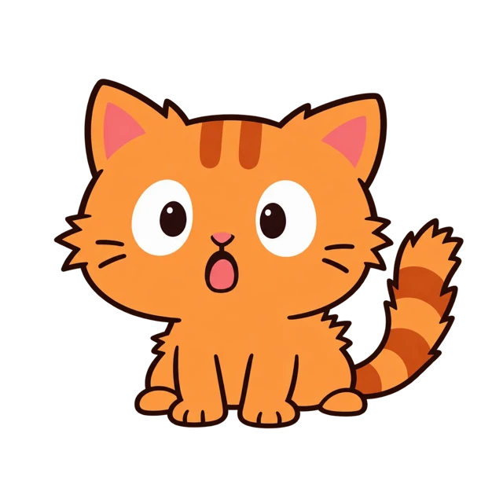
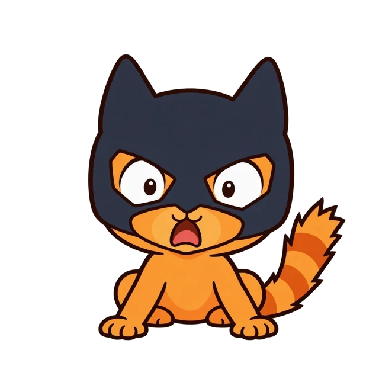
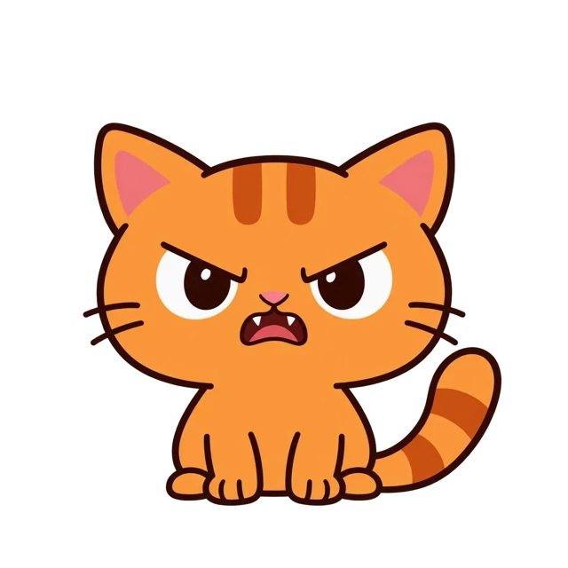
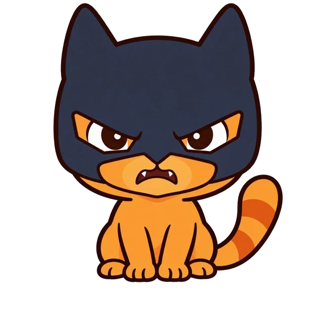
Демо не падает. Нет интернета или нейросеть молчит дольше 9,5 с: кот показывает запасную фразу из phrases.json, и всё работает дальше.
Берите телефон, наводите на что угодно.